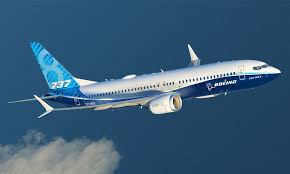
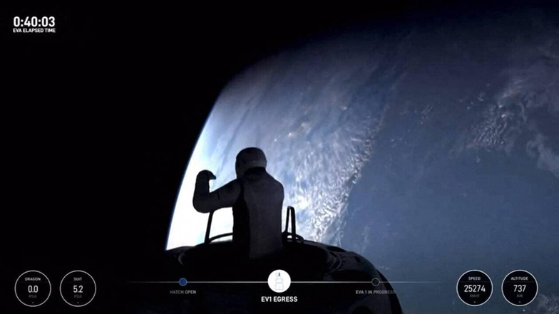
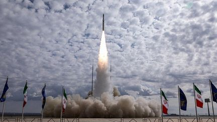
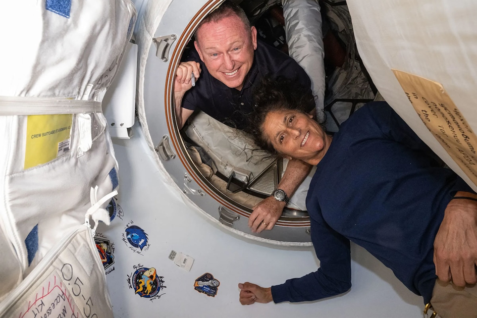

Bonjour à tous et bienvenue dans le récap spatial
Le 6 juin 2024, SpaceX a franchi une étape majeure dans le développement de son lanceur spatial Starship. Lors de son quatrième vol d’essai, la société a réussi à faire revenir le premier étage de la fusée, nommé Super Heavy, de manière maîtrisée dans l’océan. Ce succès marque un moment historique pour SpaceX, ouvrant la voie à des améliorations futures et à une maîtrise accrue des technologies de récupération de lanceurs.
Le Super Heavy a effectué un amerrissage contrôlé dans le golfe du Mexique, environ sept minutes après le décollage. La clameur et l’enthousiasme au centre de contrôle de SpaceX témoignent de l’importance de cet exploit. Les commentatrices en direct ont également exprimé leur excitation face à cette prouesse technique.
Cet amerrissage marque une nette amélioration par rapport au précédent vol d’essai de mars. À cette occasion, des problèmes de motorisation avaient perturbé le retour du Super Heavy, qui avait été perdu à 462 mètres au-dessus de la mer. Cette fois-ci, la fusée a décéléré correctement et touché l’eau à une vitesse d’environ 100 km/h.

Malgré ce succès, tout ne s’est pas déroulé sans accroc. Un des moteurs ne s’est pas rallumé comme prévu, et un autre n’avait pas fonctionné lors du décollage. Cependant, le Super Heavy a réussi à se poser verticalement dans l’eau, limitant ainsi les dégâts potentiels d’une chute à plat. Un début de basculement a été observé, mais ce mouvement a été contenu.
À la toute fin de la séquence, une explosion semble s’être produite dans la zone des moteurs, provoquant un embrasement visible à l’écran. La nature exacte de cette explosion reste à déterminer, et les ingénieurs de SpaceX devront analyser cet incident pour éviter qu’il ne se reproduise lors des futurs essais.

L’objectif ultime de SpaceX n’est pas d’amerrir le Super Heavy. La société envisage de développer un système innovant permettant de récupérer le premier étage du lanceur directement sur la terre ferme. Ce système impliquerait l’utilisation d’une pince géante installée sur une tour de lancement pour attraper le Super Heavy à son retour. Cette méthode permettrait de se passer du train d’atterrissage, allégeant ainsi la fusée et augmentant son efficacité.

Le quatrième vol d’essai du Starship marque une avancée significative pour SpaceX. En réussissant à faire revenir le Super Heavy de manière contrôlée dans l’océan, la société démontre des progrès notables dans la maîtrise de la récupération de lanceurs. Bien que des défis subsistent, les ingénieurs de SpaceX continuent de repousser les limites de la technologie spatiale. L’avenir promet encore plus d’innovations, avec l’espoir de récupérer le Super Heavy directement sur une tour de lancement.
Le vaisseau Starliner de Boeing a enfin décollé le mercredi 5 juin de Cap Canaveral en Floride, en direction de la Station spatiale internationale (ISS), après plusieurs reports. La mission marque une étape importante, car pour la première fois, des astronautes sont à bord. La fusée Atlas V, avec la capsule Starliner au sommet, a décollé à 10h52 (heure locale). L'équipage est composé des astronautes de la NASA, Butch Wilmore et Suni Williams, qui passeront un peu plus d'une semaine à bord de l'ISS avant de revenir via Starliner.
Ce vol test est crucial pour Boeing, qui doit prouver la sécurité de Starliner après des années de retards et deux tentatives de décollage annulées en un mois. La NASA souhaite disposer d'un deuxième vaisseau en plus de celui de SpaceX pour assurer le transport des astronautes, renforçant ainsi la fiabilité et la sécurité de ses missions vers l'ISS. Si le test est concluant, Boeing pourra débuter ses opérations régulières, bien que quatre ans après SpaceX, qui transporte des astronautes depuis 2020.

Et voilà c’est la fin du récap spatial je vous souhaite une bonne semaine.